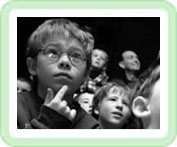
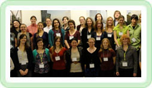

A branch of the national SPS organization.
If you have interest in getting involved in any physics outreach event or program, contact the coordinator or an SPS officer. Volunteers are always welcome!
 Eugene Science Factory and Planetarium
The Science Factory is a private non-profit children's science museum and planetarium. The organization hosts field trips and families year round, and is dedicated to getting children excited about science. Volunteers are always welcome--especially students with some background in science. The planetarium trains volunteers on giving the interactive presentations, so if you're into astronomy, this is the perfect way to get some volunteer hours in and brush up on your constellations and public speaking skills, all at the same time! Other volunteer opportunities include exhibit guides, camp counselors, and administrative help.
Meet a Scientist Day
On Saturday, February 1st, The Science Factory will be hosting its annual Meet a Scientist Day, an event where a variety of different groups gather to present science demonstrations to families. It's a really fun time, and the demos are very cool! The Society of Physics Students will be hosting a booth this year, so if you are interested in volunteering, contact an SPS officer.
Science Program to Inspire Creativity and Excellence
or SPICE for short, is a program focused on creating a learning environment where girls can thrive in science, technology, engineering, and mathematics (STEM). Through mentoring and role-modeling for middle- and high school girls, and by facilitating hands-on research experience, SPICE aims to increase the number of women attaining degrees in STEM fields, and participating in the highest levels of STEM careers. The U of O plays a big role in the program, hosting SPICE camps and providing equipment for the young scientists. Additionally, many SPICE camp volunteers are UO undergrads interested in community outreach--it's a great way to get involved!
More information can be found on the SPICE website (http://oco.uoregon.edu/spice).